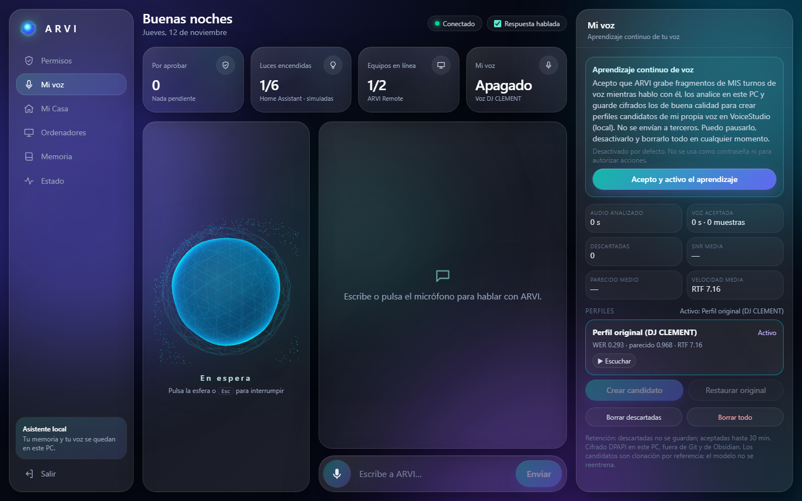
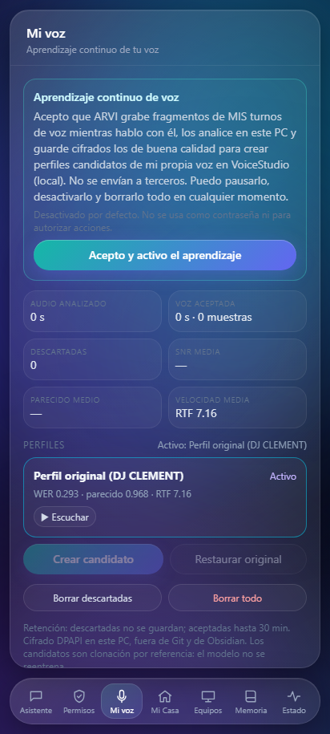

26. Ampliación: aprendizaje continuo de la voz («Mi voz»)¶
26.1 Objetivo y planteamiento honesto¶
ARVI habla con la voz clonada del alumno, el perfil «DJ CLEMENT» de VoiceStudio (capítulo 10). El objetivo de esta ampliación es que esa voz mejore con el uso, aprovechando lo que el alumno dice al hablar con ARVI.
Antes de diseñar nada había que aclarar qué significa «aprender» con OmniVoice, el modelo que usa VoiceStudio:
| Técnica | Qué cambia | ¿Viable aquí? | Estado |
|---|---|---|---|
| Clonación por referencia | Solo el audio y el texto de referencia del perfil. El modelo no cambia | Sí: la API de perfiles de VoiceStudio la permite | Implementada |
| Ajuste de parámetros (pasos de difusión, velocidad) | La configuración de inferencia | Sí | Medida (26.6); se mantienen 4 pasos |
| Ajuste fino (fine-tuning, LoRA) | Los pesos del modelo | No en este equipo: no hay GPU dedicada, VoiceStudio no lo expone y requeriría horas de cómputo | No realizado |
| Entrenamiento desde cero | Todo el modelo | No: miles de horas de audio y GPU | Descartado |
Por tanto, en esta memoria no se afirma que el modelo aprenda mediante entrenamiento. Lo que hace ARVI es seleccionar automáticamente los mejores fragmentos de la voz real del alumno, construir con ellos un perfil candidato (una nueva referencia) y medir objetivamente si suena mejor que el actual.
Tampoco se ejecutó ningún entrenamiento pesado ni se contrataron recursos externos. La variante
cuantizada OmniVoice-GGUF quedó sin probar: su ejecutable (omnivoice-tts) no está instalado en
VoiceStudio. Se decidió no descargar los 660 MB del modelo por no poder ejecutarlo y para no afectar
al túnel de djbota.
26.2 Flujo¶
%% figura: Flujo del aprendizaje continuo de voz
flowchart TD
C{¿Consentimiento y no en pausa?} -->|no| X[No se recoge nada]
C -->|sí| T[Turno de voz del USUARIO] --> Q[Cola en segundo plano]
Q -->|8 s sin conversación| A[Análisis: VAD, SNR, recorte, nivel, huella, tono]
A --> R[STT local: ¿coincide con el texto? ¿es eco de ARVI?]
R -->|no apta| D[Descartada: solo métricas, sin audio]
R -->|apta| G[Guardada cifrada DPAPI en data/voz]
G --> K[Perfil candidato en VoiceStudio]
K --> E[Evaluación: WER, parecido, RTF frente al perfil activo]
E -->|apto| Act[Activación manual o automática opcional]
E -->|no apto| Keep[Se mantiene el perfil actual]26.3 Privacidad y consentimiento¶
- Desactivado por defecto. Sin consentimiento explícito, la API rechaza cualquier muestra (409).
- Indicador visible. Mientras recoge, la cabecera muestra «Aprendiendo tu voz» con un punto rojo pulsante. Al pulsarlo se pausa.
- Solo los turnos del usuario. Se adjunta la última respuesta de ARVI únicamente para descartar ecos.
- Almacenamiento. Muestras cifradas con DPAPI en
data/voz/(fuera de Git y fuera de Obsidian), más una base de datos propiadata/voz/voz.dbcon registro de operaciones. - Retención. El audio descartado no se guarda (solo sus métricas). La voz aceptada se limita a 30 minutos; si se supera, se retiran las peores muestras.
- Borrado. Botones para borrar una muestra, las descartadas o todo. «Borrar todo» elimina también los perfiles candidatos de VoiceStudio; solo puede borrar perfiles con el prefijo «ARVI aprendizaje», nunca el original.
- La voz no autentica. La voz clonada no se usa como contraseña ni para autorizar acciones. Esto consta en el consentimiento y en las reglas de personalidad del agente.
26.4 Calidad de las muestras¶
Umbrales en config/voice_learning.yaml:
| Métrica | Umbral | Motivo |
|---|---|---|
| Voz útil (VAD por energía) | ≥ 1,5 s | Fragmentos muy cortos no aportan |
| SNR estimada | ≥ 15 dB | Ruido de fondo |
| Recorte | ≤ 0,5 % | Saturación |
| Nivel | ≥ −40 dBFS | Volumen demasiado bajo |
| Coincidencia STT-texto | ≥ 0,6 | Que el audio diga lo que dice el turno |
| Huella de locutor (log-mel, heurística) | ≥ 0,80 frente a la referencia original | Que sea la voz del alumno y no otra persona |
| Parecido con la última respuesta de ARVI | < 0,8 | Eco del altavoz |
La huella de locutor es una heurística (promedio de espectro log-mel). No es un sistema biométrico y no se usa para autenticar.
26.5 Evaluación de candidatos¶
Cada candidato sintetiza tres frases fijas. Se compara con el perfil activo en tres medidas: inteligibilidad (WER con el reconocimiento local), parecido con la voz original y velocidad (RTF, segundos de cálculo por segundo de audio).
Criterios (en config/voice_learning.yaml):
- WER no peor que +5 puntos;
- parecido no menor de −0,02;
- RTF no mayor que ×1,25.
Un candidato no apto nunca sustituye al perfil activo, ni siquiera con la actualización automática activada. El perfil original se conserva siempre y se puede restaurar. Además, el alumno puede votar la escucha A/B.
26.6 Pruebas¶
La prueba se hizo con audio real del alumno: fragmentos de la referencia original de su perfil, no
micrófono en vivo (scripts/e2e/mi_voz.py, evidencia
docs/pruebas/evidencias/mi-voz-2026-11-12.json).
| ID | Prueba | Resultado |
|---|---|---|
| V1 | Desactivado por defecto | OK — 409 sin consentimiento |
| V2 | Consentimiento explícito | OK — activo e indicador «recogiendo» |
| V3 | Pausa | OK — 409 en pausa |
| V4 | Análisis en segundo plano | OK — 6 fragmentos: 5 aceptados, 1 descartado (poca voz). SNR media 58,8 dB; parecido medio 0,992; la API siguió respondiendo en menos de 10 ms |
| V5 | Silencio y ruido | OK — descartados y sin audio guardado |
| V6 | Voz sintetizada de ARVI | OK — rechazada como eco |
| V7 | Cifrado y ubicación | OK — 5 archivos cifrados, ignorados por Git, fuera de Obsidian |
| V8 | Candidato | OK — referencia de 14,58 s con 4 muestras, creado en VoiceStudio |
| V9 | Evaluación | OK — no apto, no activado (detalle abajo) |
| V10 | Borrar todo | OK — 9 muestras y 1 candidato borrados; original intacto y activo |
Resultado de la evaluación (V9):
| Perfil | WER | Parecido | RTF |
|---|---|---|---|
| Original (DJ CLEMENT) | 0,293 | 0,968 | 7,16 |
| Candidato 1 | 0,372 | 0,976 | 11,44 |
El candidato se parece algo más a la voz original, pero se entiende peor y es un 60 % más lento. El sistema lo marcó no apto y mantuvo el original, que es el comportamiento esperado. Es decir: con solo 14,6 s de muestras sacadas de la misma grabación, el candidato no mejora la voz. Hace falta más audio variado del uso real.
Velocidad frente a calidad (perfil DJ CLEMENT, CPU)¶
Evidencia docs/pruebas/evidencias/velocidad-voz-2026-11-12.json, dos frases por configuración:
| Pasos de difusión | Tiempo por frase | RTF medio | WER medio | Conclusión |
|---|---|---|---|---|
| 2 | 13,3–13,9 s | 3,87 | 0,952 | Rápido pero ininteligible |
| 4 | 25,2–26,3 s | 7,40 | 0,231 | Compromiso elegido |
| 8 | 49,4–51,7 s | 15,72 | 0,118 | Mejor calidad, el doble de lento |
Con la CPU (i9-12900HK) la voz clonada no puede ir en tiempo real. La mejora real pasa por una GPU (capítulo 22).
Pruebas MOCK: 9 en tests/unit/test_voicelearn.py (análisis, umbrales, eco, retención, criterios y
borrado). Registro: P-049 a P-051.


26.7 Limitaciones y pendientes¶
- [PENDIENTE] Prueba con el micrófono real durante conversaciones de uso diario. Las pruebas usaron fragmentos de la grabación original.
- [PENDIENTE] Token de Hugging Face para evaluar PocketTTS como alternativa más rápida.
- OmniVoice-GGUF no está disponible en esta instalación de VoiceStudio.
- No hay ajuste fino de pesos: solo selección de referencia.